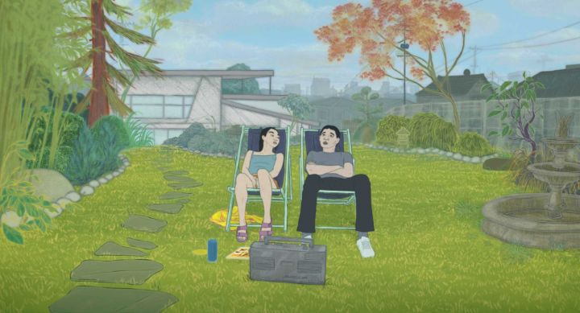

I was curious ever since I first heard about the 2022 movie "Blind Willow, Sleeping Woman." It was announced earlier, so it felt like a long time comming when I finally got to see it at an art-house theater in 2023. It's based on a number of short stories by Japanese author Haruki Murakami, whose works have inspired other critically acclaimed dramas such as "Burning" and "Drive My Car." This animated adaptation was primarily directed in France however, with dialogue in English, while still keeping the original setting of Japan. Colour-me intrigued. If you're expecting anything remotely like an anime (even the stranger and funnier ones, like those based on works by author Tomihiko Morimi), you won't be satisfied. The pacing and tone felt very much like "Drive My Car" to me, of realistic individuals wandering through a reality mixed with lucid-dream-hallucinations. "Blind Willow" is separated into marked chapters ("1," "2," "3," etc.), but for the most part, continue the story in order (these aren't stand-alone episodes). The story takes place shortly after the 2011 earthquake in Japan. and primarily follows two men. The first is a younger, married man, whose wife is fixated on the aftermath of the earthquake on television, going for days without sleep before eventually leaving the man with a goodbye letter - he's left to deal with his emotions on the sudden departure and questioning his own place in life, with some interjection from co-workers, friends, family and strangers. The second man is a middle-aged, shy salaryman, often taken advantage of at his loan firm and never appreciated. After a particularly hard day, he's surprised by a 6-foot talking frog in his apartment - he's well-spoken, and insists that the salaryman is the only one who can help him to stop a great underground worm monster from causing yet another nationwide quake. This movie released in North America not long after Makoto Shinkai's "Suzume," which also featured the 2011 earthquake and the traditional legend of it being caused by a large worm; both make for an interesting and complimentary double-feature. One can sense where the multiple short stories are, making "Blind Willow" an anthology of sorts. It's often dramatic in quiet ways, thoughtful and introspective. At times, its funny in absurd ways (particularly with the salaryman and the frog). It's also daringly slow. The chapter numbers seem unnecessary at first, but ultimately provided a purpose, helping ensure the viewer felt some progress was being made towards an ending. Because it's hard to tell where exactly the movie IS going with any of its characters. When the credits finally roll, it feels abrupt - progress had in fact occurred, but like life itself, it did so quietly with a mild whimper instead of a bang. For those reasons, this is solely intended for the intellectual and patient viewer (and adults only, as nudity and sex are present), and rewatchability suffers when you know what's going to happen, save perhaps if you want to think more on the metaphors you witness on screen. I was present with the movie from start to finish, but I think this might have been better served as a mini-series of 24-minute television episodes. This style and tone seems true to the author's style, although I'm basing that on how directors have chosen to adapt his works elsewhere. If you liked movies like "Drive My Car," you'll appreciate "Blind Willow," and vice-versa.  The animation is curious, and some articles on the production explain why. Director Pierre Foldes chose to use motion capture, first shooting live actors, then placing 3D heads for each character in their place, and finally tracing everything into 2D animation with added expressions. The result is grounded and realistic, while still allowing for some abstract and subtlely expressive faces. Perhaps more glaring is how stereotypical facial features for the Japanese characters are exaggerated, almost to the point of ugliness (the wife that leaves the young man is the biggest example), a strange design choice, especially since every speaks English with American accents. It's in the dream-like sequences, either hallucinations or imagination, where the practical use of animation gets a chance to shine. For this type of story, it's the actors' performances that stand out the most in the production."Blind Willow, Sleeping Woman" is a curious experiment that celebrates the work of the author Murakami. Fans of his stories should be pleased with the movie, and fans of the movie will be excited to discover the rest of his bibliography. Beyond that bubble, it might not be for everyone, but it's worth a try for the patient-minded.
- "Ani" More reviews can be found at : https://2danicritic.github.io/ Previous review: review_Blazblue_-_Alter_Memory Next review: review_Blood-C_-_The_Last_Dark